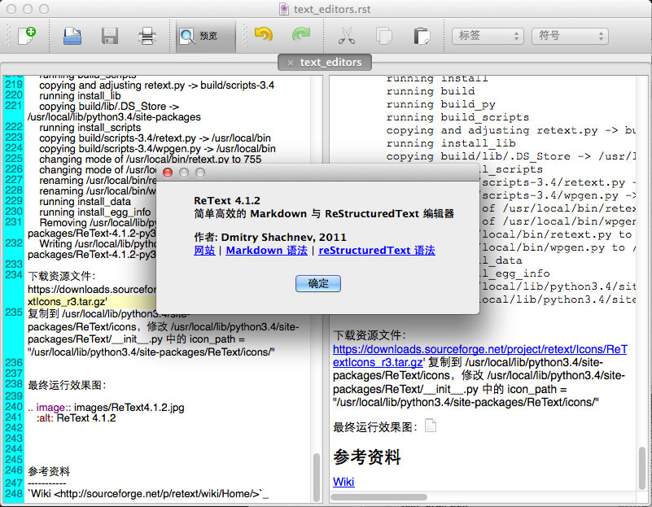

<!DOCTYPE html>
<!--[if lt IE 7]>      <html class="no-js lt-ie9 lt-ie8 lt-ie7"> <![endif]-->
<!--[if IE 7]>         <html class="no-js lt-ie9 lt-ie8"> <![endif]-->
<!--[if IE 8]>         <html class="no-js lt-ie9"> <![endif]-->
<!--[if gt IE 8]><!--> <html class="no-js"> <!--<![endif]-->
    <head>
        <meta charset="utf-8">
        <meta http-equiv="X-UA-Compatible" content="IE=edge,chrome=1">
        <title>    纯文本编辑器
</title>
        <meta name="description" content="">
        <meta name="viewport" content="width=device-width">
            <link rel="stylesheet" href="https://magicalboy.com/theme/css/normalize.css">
        <link href='//fonts.googleapis.com/css?family=Lato' rel='stylesheet' type='text/css'>
        <link href='//fonts.googleapis.com/css?family=Oswald' rel='stylesheet' type='text/css'>
        <link rel="stylesheet" href="https://magicalboy.com/theme/css/font-awesome.min.css">
        <link rel="stylesheet" href="https://magicalboy.com/theme/css/main.css">

    <link rel="stylesheet" href="https://magicalboy.com/theme/css/blog.css">
    <link rel="stylesheet" href="https://magicalboy.com/theme/css/github.css">
        <link href="https://magicalboy.com/feeds/all.atom.xml" type="application/atom+xml" rel="alternate" title="MAG's Note Atom Feed" />
        <script src="https://magicalboy.com/theme/js/vendor/modernizr-2.6.2.min.js"></script>
    </head>
    <body>
        <!--[if lt IE 7]>
            <p class="chromeframe">You are using an <strong>outdated</strong> browser. Please <a href="http://browsehappy.com/">upgrade your browser</a> or <a href="http://www.google.com/chromeframe/?redirect=true">activate Google Chrome Frame</a> to improve your experience.</p>
        <![endif]-->

        <div id="wrapper">
<header id="sidebar" class="side-shadow">
    <hgroup id="site-header">
        <a id="site-title" href="https://magicalboy.com"><h1><i class="icon-mobile-phone"></i> Don</h1></a>
        <p id="site-desc"> 关注移动应用开发 </p>
    </hgroup>
    <nav>
        <ul id="nav-links">
        </ul>
    </nav>
	<nav>
      <!-- <ul>
          <li><a target="_blank" href="https://magicalboy.com">MAGICALBOY</a></li>
          <li><a href="https://github.com/donly">icon-github</a></li>
          <li><a href="mailto:donly@magicalboy.com">icon-envelope-alt</a></li>
          <li><a href="atom.xml">icon-rss</a></li>
      </ul> -->
      <ul id="nav-services" class="centered-nav">
              <li><a href="https://github.com/donly" target="_brank"><i class="icon-github svc-badge"></i></a></li>
              <li><a href="mailto:donly@magicalboy.com" target="_brank"><i class="icon-envelope-alt svc-badge"></i></a></li>
              <li><a href="atom.xml" target="_brank"><i class="icon-rss svc-badge"></i></a></li>
      </ul>
	</nav>
</header>
    <div id="post-container">
        <ol id="post-list">
            <li>
                <article class="post-entry">
                    <header class="entry-header">
                        <time class="post-time" datetime="2015-05-17T12:19:16+08:00" pubdate>
                            Sun, 17 May 2015
                        </time>
                        <a href="https://magicalboy.com/text_editor.html" rel="bookmark"><h1>纯文本编辑器</h1></a>
                    </header>

                    <section class="post-content">
                        <div class="section" id="retext">
<h2>ReText</h2>
<p><a class="reference external" href="http://sourceforge.net/projects/retext/">ReText</a> is a simple editor that reads your text with MarkDown or HTML markup and saves it as plain text, HTML or PDF.</p>
<p>It is written in Python using Qt libraries.</p>
<p><strong>It's a cross platform program.</strong></p>
<div class="section" id="mac-os-x-yosemite">
<h3>Mac OS X Yosemite 上安装</h3>
<p>使用 brew 安装：<a class="reference external" href="http://sourceforge.net/p/retext/wiki/Home/">http://sourceforge.net/p/retext/wiki/Home/</a></p>
<p>以下是部分安装日志：</p>
<div class="highlight"><pre><span></span>$ brew tap homebrew/python
<span class="o">==</span>&gt; Tapping Homebrew/python
Cloning into <span class="s1">&#39;/usr/local/Library/Taps/homebrew/homebrew-python&#39;</span>...
remote: Counting objects: <span class="m">16</span>, <span class="k">done</span>.
remote: Compressing objects: <span class="m">100</span>% <span class="o">(</span><span class="m">16</span>/16<span class="o">)</span>, <span class="k">done</span>.
remote: Total <span class="m">16</span> <span class="o">(</span>delta <span class="m">1</span><span class="o">)</span>, reused <span class="m">7</span> <span class="o">(</span>delta <span class="m">0</span><span class="o">)</span>, pack-reused <span class="m">0</span>
Unpacking objects: <span class="m">100</span>% <span class="o">(</span><span class="m">16</span>/16<span class="o">)</span>, <span class="k">done</span>.
Checking connectivity... <span class="k">done</span>.
Tapped <span class="m">13</span> formulae <span class="o">(</span><span class="m">51</span> files, 216K<span class="o">)</span>

$ brew install <span class="nv">retext</span>
<span class="o">==</span>&gt; Installing retext from homebrew/homebrew-python
<span class="o">==</span>&gt; Installing dependencies <span class="k">for</span> retext: xz, pkg-config, readline, sqlite,
<span class="o">==</span>&gt; Installing retext dependency: <span class="nv">xz</span>
<span class="o">==</span>&gt; Downloading https://homebrew.bintray.com/bottles/xz-5.2.1.yosemite.bottle.ta
<span class="c1">######################################################################## 100.0%</span>
...
</pre></div>
<p>安装编译完成后，直接调用 <em>retext</em> 命令即可打开带图形界面的编辑器。That's all，就这么简单。</p>
</div>
<div class="section" id="mac-os-x-10-9-2">
<h3>Mac OS X（10.9.2） 上安装</h3>
<p>使用 brew 安装：<a class="reference external" href="http://sourceforge.net/p/retext/wiki/Home/">http://sourceforge.net/p/retext/wiki/Home/</a></p>
<div class="highlight"><pre><span></span>brew tap samueljohn/python
brew install enchant
pip install pyenchant
pip install markups
pip install markdown
pip install docutils

$ brew install retext
Warning: It appears you have MacPorts or Fink installed.
Software installed with other package managers causes known problems <span class="k">for</span>
Homebrew. If a formula fails to build, uninstall MacPorts/Fink and try again.
<span class="o">==</span>&gt; Installing dependencies <span class="k">for</span> retext: qt, sip, <span class="nv">pyqt</span>
<span class="o">==</span>&gt; Installing retext dependency: <span class="nv">qt</span>
<span class="o">==</span>&gt; Downloading https://downloads.sf.net/project/machomebrew/Bottles/qt-4.8.5.mavericks.bottle.4.tar.gz
</pre></div>
<p>安装时遇到的问题：</p>
<p>Q1: Could not link glib</p>
<div class="highlight"><pre><span></span>$ brew link glib
Linking /usr/local/Cellar/glib/2.38.2... Warning: Could not link glib. Unlinking...

Error: Could not symlink file: /usr/local/Cellar/glib/2.38.2/share/locale/hr/LC_MESSAGES/glib20.mo
/usr/local/share/locale/hr/LC_MESSAGES is not writable. You should change its permissions.
</pre></div>
<p>解决方法：</p>
<div class="highlight"><pre><span></span>$ sudo chown -R <span class="k">$(</span>whoami<span class="k">)</span>:admin /usr/local
$ brew link glib
Linking /usr/local/Cellar/glib/2.38.2... <span class="m">136</span> symlinks created
</pre></div>
<p>Q2: install enchant error</p>
<div class="highlight"><pre><span></span>$ brew install enchant
Warning: It appears you have MacPorts or Fink installed.
Software installed with other package managers causes known problems <span class="k">for</span>
Homebrew. If a formula fails to build, uninstall MacPorts/Fink and try again.
<span class="o">==</span>&gt; Installing enchant dependency: <span class="nv">aspell</span>
<span class="o">==</span>&gt; Downloading http://ftpmirror.gnu.org/aspell/aspell-0.60.6.1.tar.gz
Already downloaded: /Library/Caches/Homebrew/aspell-0.60.6.1.tar.gz
<span class="o">==</span>&gt; ./configure --prefix<span class="o">=</span>/usr/local/Cellar/aspell/0.60.6.1
<span class="o">==</span>&gt; make install
<span class="m">20</span> errors generated.
make<span class="o">[</span><span class="m">1</span><span class="o">]</span>: *** <span class="o">[</span>prog/checker_string.o<span class="o">]</span> Error <span class="m">1</span>
<span class="m">20</span> errors generated.
make<span class="o">[</span><span class="m">1</span><span class="o">]</span>: *** <span class="o">[</span>prog/aspell.o<span class="o">]</span> Error <span class="m">1</span>
make: *** <span class="o">[</span>install-recursive<span class="o">]</span> Error <span class="m">1</span>

READ THIS: https://github.com/Homebrew/homebrew/wiki/troubleshooting
</pre></div>
<p>解决方法：</p>
<div class="highlight"><pre><span></span>$ brew update
$ brew doctor
$ brew install enchant
Warning: It appears you have MacPorts or Fink installed.
Software installed with other package managers causes known problems <span class="k">for</span>
Homebrew. If a formula fails to build, uninstall MacPorts/Fink and try again.
<span class="o">==</span>&gt; Installing dependencies <span class="k">for</span> enchant: glib, <span class="nv">aspell</span>
<span class="o">==</span>&gt; Installing enchant dependency: <span class="nv">glib</span>
<span class="o">==</span>&gt; Downloading https://downloads.sf.net/project/machomebrew/Bottles/glib-2.40.0.mavericks.bottle.tar.gz
<span class="c1">######################################################################## 100.0%</span>
<span class="o">==</span>&gt; Pouring glib-2.40.0.mavericks.bottle.tar.gz
  /usr/local/Cellar/glib/2.40.0: <span class="m">410</span> files, <span class="nv">18M</span>
<span class="o">==</span>&gt; Installing enchant dependency: <span class="nv">aspell</span>
<span class="o">==</span>&gt; Downloading http://ftpmirror.gnu.org/aspell/aspell-0.60.6.1.tar.gz
Already downloaded: /Library/Caches/Homebrew/aspell-0.60.6.1.tar.gz
<span class="o">==</span>&gt; Patching
patching file interfaces/cc/aspell.h
<span class="o">==</span>&gt; ./configure --prefix<span class="o">=</span>/usr/local/Cellar/aspell/0.60.6.1
<span class="o">==</span>&gt; make <span class="nv">install</span>
<span class="o">==</span>&gt; Downloading http://ftpmirror.gnu.org/aspell/dict/en/aspell6-en-7.1-0.tar.bz2
<span class="c1">######################################################################## 100.0%</span>
<span class="o">==</span>&gt; ./configure --vars <span class="nv">ASPELL</span><span class="o">=</span>/usr/local/Cellar/aspell/0.60.6.1/bin/aspell <span class="nv">PREZIP</span><span class="o">=</span>/usr/local/Cellar/aspell/0.60.6.1/bin/prezip
<span class="o">==</span>&gt; make install
  /usr/local/Cellar/aspell/0.60.6.1: <span class="m">181</span> files, <span class="m">6</span>.5M, built in <span class="m">26</span> <span class="nv">seconds</span>
<span class="o">==</span>&gt; Installing <span class="nv">enchant</span>
<span class="o">==</span>&gt; Downloading http://www.abisource.com/downloads/enchant/1.6.0/enchant-1.6.0.tar.gz
<span class="c1">######################################################################## 100.0%</span>
<span class="o">==</span>&gt; ./configure --prefix<span class="o">=</span>/usr/local/Cellar/enchant/1.6.0 --disable-ispell --disable-myspell
<span class="o">==</span>&gt; make <span class="nv">install</span>
<span class="o">==</span>&gt; Downloading https://pypi.python.org/packages/source/p/pyenchant/pyenchant-1.6.5.tar.gz
<span class="c1">######################################################################## 100.0%</span>
<span class="o">==</span>&gt; python setup.py install --prefix<span class="o">=</span>/usr/local/Cellar/enchant/1.6.0 --single-version-externally-managed --record<span class="o">=</span>installed.txt
<span class="o">==</span>&gt; Caveats
If you need Python to find the installed site-packages:
  mkdir -p ~/Library/Python/2.7/lib/python/site-packages
  <span class="nb">echo</span> <span class="s1">&#39;/usr/local/lib/python2.7/site-packages&#39;</span> &gt; ~/Library/Python/2.7/lib/python/site-packages/homebrew.pth
<span class="o">==</span>&gt; Summary
  /usr/local/Cellar/enchant/1.6.0: <span class="m">55</span> files, 676K, built in <span class="m">28</span> seconds
</pre></div>
<p>Q3: pip install pyenchant failed.</p>
<div class="highlight"><pre><span></span>$ pip install pyenchant
Traceback <span class="o">(</span>most recent call last<span class="o">)</span>:
  File <span class="s2">&quot;/usr/local/bin/pip&quot;</span>, line <span class="m">5</span>, in &lt;module&gt;
    from pkg_resources import load_entry_point
  File <span class="s2">&quot;/System/Library/Frameworks/Python.framework/Versions/2.7/Extras/lib/python/pkg_resources.py&quot;</span>, line <span class="m">2603</span>, in &lt;module&gt;
    working_set.require<span class="o">(</span>__requires__<span class="o">)</span>
  File <span class="s2">&quot;/System/Library/Frameworks/Python.framework/Versions/2.7/Extras/lib/python/pkg_resources.py&quot;</span>, line <span class="m">666</span>, in require
    <span class="nv">needed</span> <span class="o">=</span> self.resolve<span class="o">(</span>parse_requirements<span class="o">(</span>requirements<span class="o">))</span>
  File <span class="s2">&quot;/System/Library/Frameworks/Python.framework/Versions/2.7/Extras/lib/python/pkg_resources.py&quot;</span>, line <span class="m">565</span>, in resolve
    raise DistributionNotFound<span class="o">(</span>req<span class="o">)</span>  <span class="c1"># XXX put more info here</span>
pkg_resources.DistributionNotFound: <span class="nv">pip</span><span class="o">==</span><span class="m">1</span>.4.1
donlydeMacBook-Pro:Vizrt Sun-cam$ pip install markups
Traceback <span class="o">(</span>most recent call last<span class="o">)</span>:
  File <span class="s2">&quot;/usr/local/bin/pip&quot;</span>, line <span class="m">5</span>, in &lt;module&gt;
    from pkg_resources import load_entry_point
  File <span class="s2">&quot;/System/Library/Frameworks/Python.framework/Versions/2.7/Extras/lib/python/pkg_resources.py&quot;</span>, line <span class="m">2603</span>, in &lt;module&gt;
    working_set.require<span class="o">(</span>__requires__<span class="o">)</span>
  File <span class="s2">&quot;/System/Library/Frameworks/Python.framework/Versions/2.7/Extras/lib/python/pkg_resources.py&quot;</span>, line <span class="m">666</span>, in require
    <span class="nv">needed</span> <span class="o">=</span> self.resolve<span class="o">(</span>parse_requirements<span class="o">(</span>requirements<span class="o">))</span>
  File <span class="s2">&quot;/System/Library/Frameworks/Python.framework/Versions/2.7/Extras/lib/python/pkg_resources.py&quot;</span>, line <span class="m">565</span>, in resolve
    raise DistributionNotFound<span class="o">(</span>req<span class="o">)</span>  <span class="c1"># XXX put more info here</span>
pkg_resources.DistributionNotFound: <span class="nv">pip</span><span class="o">==</span><span class="m">1</span>.4.1
</pre></div>
<p>解决办法：</p>
<div class="highlight"><pre><span></span>$ sudo easy_install --upgrade pip
Password:
Searching <span class="k">for</span> pip
Reading http://pypi.python.org/simple/pip/
Best match: pip <span class="m">1</span>.5.4
Downloading https://pypi.python.org/packages/source/p/pip/pip-1.5.4.tar.gz#md5<span class="o">=</span>834b2904f92d46aaa333267fb1c922bb
Processing pip-1.5.4.tar.gz
Running pip-1.5.4/setup.py -q bdist_egg --dist-dir /tmp/easy_install-hsbdrM/pip-1.5.4/egg-dist-tmp-c3ITXY
warning: no files found matching <span class="s1">&#39;pip/cacert.pem&#39;</span>
warning: no files found matching <span class="s1">&#39;*.html&#39;</span> under directory <span class="s1">&#39;docs&#39;</span>
warning: no previously-included files matching <span class="s1">&#39;*.rst&#39;</span> found under directory <span class="s1">&#39;docs/_build&#39;</span>
no previously-included directories found matching <span class="s1">&#39;docs/_build/_sources&#39;</span>
Adding pip <span class="m">1</span>.5.4 to easy-install.pth file
Installing pip script to /usr/local/bin
Installing pip2.7 script to /usr/local/bin
Installing pip2 script to /usr/local/bin

Installed /Library/Python/2.7/site-packages/pip-1.5.4-py2.7.egg
Processing dependencies <span class="k">for</span> pip
Finished processing dependencies <span class="k">for</span> pip

$ sudo pip install pyenchant
</pre></div>
<p>Q4: Install retext</p>
<div class="highlight"><pre><span></span>$ brew install retext
Warning: It appears you have MacPorts or Fink installed.
Software installed with other package managers causes known problems <span class="k">for</span>
Homebrew. If a formula fails to build, uninstall MacPorts/Fink and try again.
<span class="o">==</span>&gt; Downloading https://downloads.sourceforge.net/project/retext/ReText-4.0/ReText-4.0.0.tar.gz
Already downloaded: /Library/Caches/Homebrew/retext-4.0.0.tar.gz
<span class="o">==</span>&gt; python setup.py install --prefix<span class="o">=</span>/usr/local/Cellar/retext/4.0.0
Warning: Formula#python is deprecated and will go away shortly.
Error: undefined method <span class="sb">`</span>xy<span class="s1">&#39; for #&lt;PythonDependency: &quot;python&quot; []&gt;</span>
<span class="s1">Please report this bug:</span>
<span class="s1">    https://github.com/Homebrew/homebrew/wiki/troubleshooting</span>
<span class="s1">/usr/local/Library/Taps/samueljohn-python/retext.rb:26:in `install&#39;</span>
/usr/local/Library/Homebrew/build.rb:174:in <span class="sb">`</span>install<span class="s1">&#39;</span>
<span class="s1">/usr/local/Library/Homebrew/formula.rb:267:in `brew&#39;</span>
/usr/local/Library/Homebrew/formula.rb:592:in <span class="sb">`</span>stage<span class="s1">&#39;</span>
<span class="s1">/usr/local/Library/Homebrew/resource.rb:62:in `unpack&#39;</span>
/usr/local/Library/Homebrew/extend/fileutils.rb:21:in <span class="sb">`</span>mktemp<span class="s1">&#39;</span>
<span class="s1">/usr/local/Library/Homebrew/resource.rb:59:in `unpack&#39;</span>
/usr/local/Library/Homebrew/resource.rb:52:in <span class="sb">`</span>stage<span class="s1">&#39;</span>
<span class="s1">/usr/local/Library/Homebrew/formula.rb:590:in `stage&#39;</span>
/usr/local/Library/Homebrew/formula.rb:262:in <span class="sb">`</span>brew<span class="s1">&#39;</span>
<span class="s1">/usr/local/Library/Homebrew/build.rb:151:in `install&#39;</span>
/usr/local/Library/Homebrew/build.rb:45:in <span class="sb">`</span>main<span class="err">&#39;</span>
/usr/local/Library/Homebrew/build.rb:12
/usr/local/Library/Taps/samueljohn-python/retext.rb:33
</pre></div>
<p>解决方法：</p>
<p>直接下载ReText源码，使用brew安装Python3，重新安装PyQt4 --with-python3，进入ReText-4.1.2，输入：</p>
<div class="highlight"><pre><span></span>$ python3 setup.py install

running install
running build
running build_py
running build_scripts
copying and adjusting retext.py -&gt; build/scripts-3.4
running install_lib
copying build/lib/.DS_Store -&gt; /usr/local/lib/python3.4/site-packages
running install_scripts
copying build/scripts-3.4/retext.py -&gt; /usr/local/bin
copying build/scripts-3.4/wpgen.py -&gt; /usr/local/bin
changing mode of /usr/local/bin/retext.py to <span class="m">755</span>
changing mode of /usr/local/bin/wpgen.py to <span class="m">755</span>
renaming /usr/local/bin/retext.py to /usr/local/bin/retext
renaming /usr/local/bin/wpgen.py to /usr/local/bin/wpgen
running install_data
running install_egg_info
Removing /usr/local/lib/python3.4/site-packages/ReText-4.1.2-py3.4.egg-info
Writing /usr/local/lib/python3.4/site-packages/ReText-4.1.2-py3.4.egg-info
</pre></div>
<p>下载资源文件：<a class="reference external" href="https://downloads.sourceforge.net/project/retext/Icons/ReTextIcons_r3.tar.gz">https://downloads.sourceforge.net/project/retext/Icons/ReTextIcons_r3.tar.gz</a>'
复制到 /usr/local/lib/python3.4/site-packages/ReText/icons，修改 /usr/local/lib/python3.4/site-packages/ReText/__init__.py 中的 icon_path = &quot;/usr/local/lib/python3.4/site-packages/ReText/icons/&quot;</p>
<p>最终运行效果图：</p>

</div>
<div class="section" id="id3">
<h3>参考资料</h3>
<p><a class="reference external" href="http://sourceforge.net/p/retext/wiki/Home/">Wiki</a></p>
</div>
<div class="section" id="id4">
<h3>更新日志</h3>
<ul class="simple">
<li>2015-05-17：增加 Mac OS X Yosemite 上安装</li>
</ul>
</div>
</div>

                    </section>
                    <hr/>
                    <aside class="post-meta">
                        <p>Category: <a href="https://magicalboy.com/category/misc.html">misc</a></p>
                        <p>Copyright: <a href="http://creativecommons.org/licenses/by-nc-nd/3.0/deed.zh/">自由转载-非商用-非衍生-保持署名（创意共享3.0许可证）</a></p>
                    </aside>
                    <hr/>
<div class="comments">
    <div id="disqus_thread"></div>
    <script type="text/javascript">
        var disqus_shortname = 'magsnote';
        (function() {
            var dsq = document.createElement('script'); dsq.type = 'text/javascript'; dsq.async = true;
            dsq.src = '//' + disqus_shortname + '.disqus.com/embed.js';
            (document.getElementsByTagName('head')[0] || document.getElementsByTagName('body')[0]).appendChild(dsq);
        })();
    </script>
    <noscript>Please enable JavaScript to view the <a href="http://disqus.com/?ref_noscript">comments powered by Disqus.</a></noscript>
    <a href="http://disqus.com" class="dsq-brlink">comments powered by <span class="logo-disqus">Disqus</span></a>
</div>
                </article>
            </li>
        </ol>
    </div>
        </div>
<footer id="site-info">
    <p>
        Proudly powered by <a href="http://getpelican.com/" target="pelican">Pelican</a> and <a href="http://python.org/" target="python">Python</a>. Theme base on <a href="https://github.com/hdra/pelican-cait" target="github">hndr</a>.
    </p>
    <p>
        Textures by <a href="http://subtlepatterns.com/" target="subtlepatterns">Subtle Pattern</a>. Font Awesome by <a href="http://fortawesome.github.io/Font-Awesome/" target="github">Dave Grandy</a>.
    </p>
</footer>        <script src="https://magicalboy.com/theme/js/main.js"></script>
    </body>
</html>